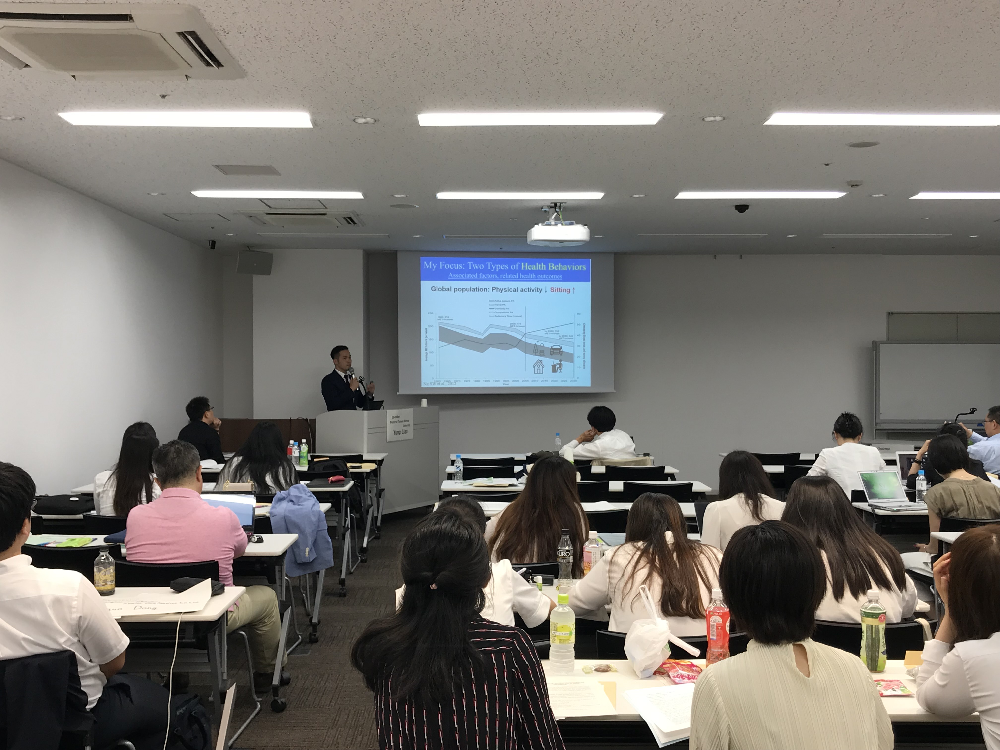
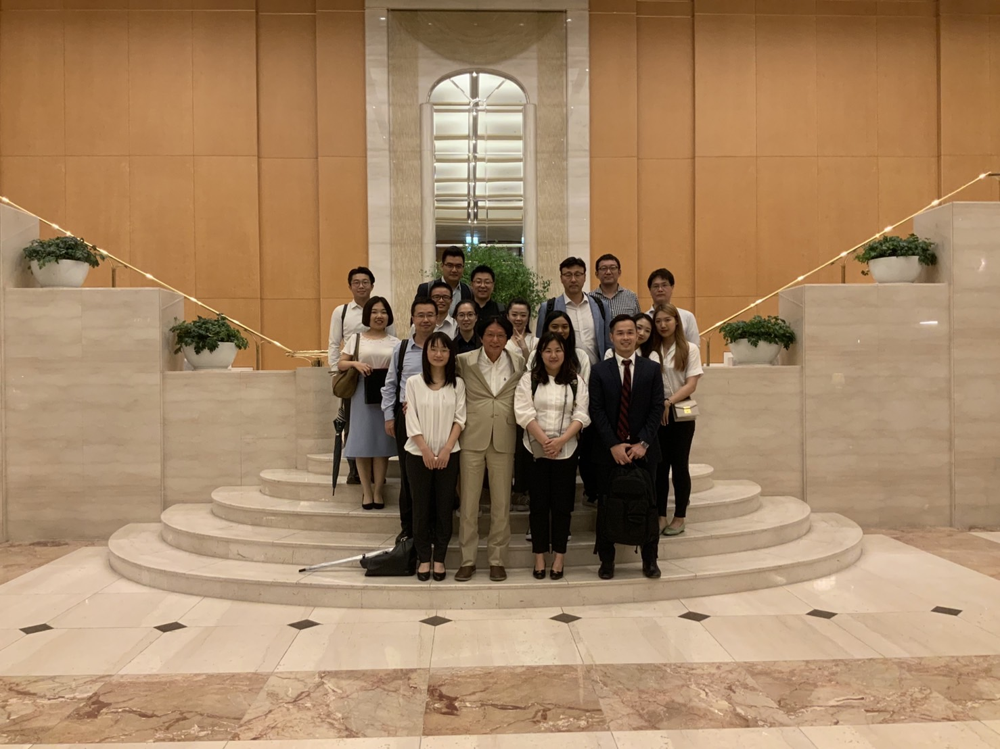
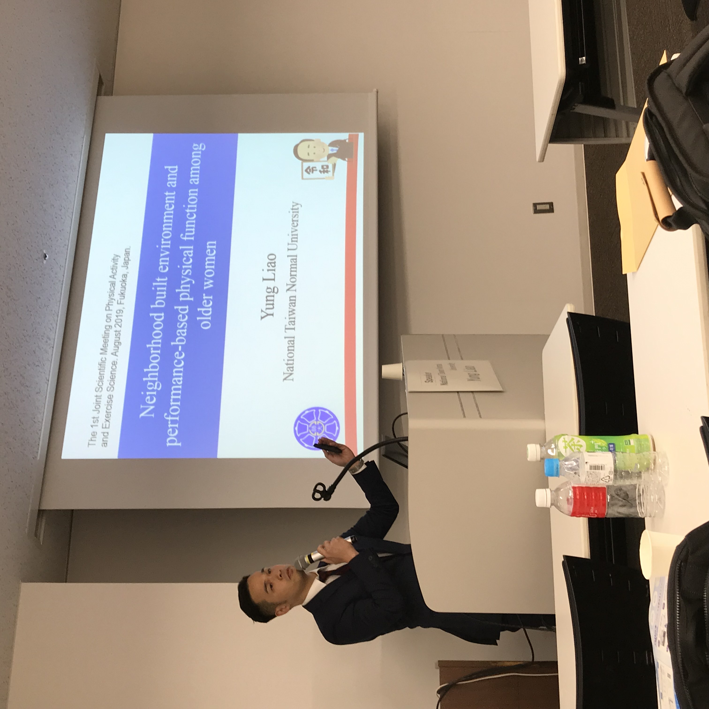

Aging and Health Promotion in East Asia
A consortium of researchers from Japan, Korea, Taiwan, and China focused on practical research into the aging of East Asia and the digitalization of health promotion.
Register for Taipei 2026
Our Journey
- 2026: The 4th Conference – Taipei, Taiwan
- 2025: The 3rd Conference – Chongqing, China
- 2024: The 2nd Conference – Busan, South Korea
- 2020–2023: Conferences canceled due to the COVID-19 pandemic.
- 2019: The 1st Conference – Fukuoka City, Japan
The 1st Conference (2019, Fukuoka)
A glimpse into our beginnings in Fukuoka City, Japan. Below are some moments from the event.



Featured Publication
The Impact of Open-Skill Exercises and E-sports on Cognitive Function: A Narrative Review of Their Role in Preventing Cognitive Decline and Dementia
- Kumagai Institute of Health Policy, Fukuoka 813-0044, Japan
- Institute of Digital Health Care, Dong-A University, Busan 49236, Korea
- Department of Health Care and Science, Dong-A University, Busan 49236, Korea
- Department of Nursing and Rehabilitation, Shandong University, Jinan 250012, China
- Department of Neurology, Minkodo Minohara Hospital, Fukuoka 811-2402, Japan
* Correspondence: yamasaki_dr@apost.plala.or.jp (T.Y.)
Read Full PaperRegistration
Registration for the 2026 Taipei conference will open soon. Please stay tuned for more information!